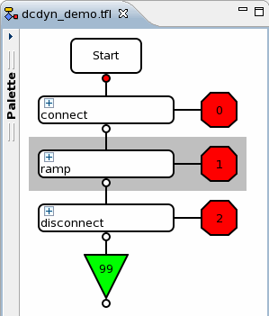
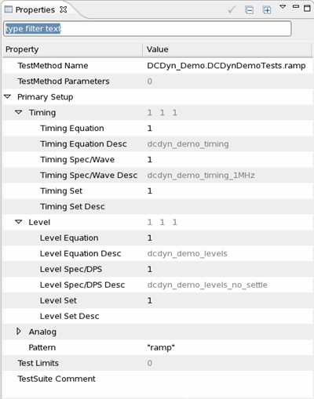

Setting up the testflow for a dynamic DC test
This step of the dynamic DC test setup defines the test suites in the testflow editor and sets the previously defined test methods and primaries.
About this task
Setting up a testflow includes selecting the test methods and the primaries.
Before you begin
Before you can define the test suites in the testflow, the primaries setup and test methods for the dynamic DC test should be complete, and you must have built the test method project.
Procedure
Results
The graphic shows the resulting testflow and the properties of the "ramp" test suite.


What to do next
Next you can execute the test and retrieve the results.
Functional changes
- Introduced in SmarTest 6.5.2